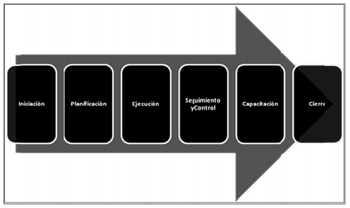

OVI GERENCIA DE PROYECTOS INFORMÁTICOS
204030
Lecturas

LECTURA 1: Ciclo de vida de un proyecto informático.
Antes de iniciar es pertinente aclarar ¿Qué es un proyecto?
Un proyecto es una planificación que consiste en un conjunto de actividades que se encuentran relacionadas y coordinadas para alcanzar metas y objetivos específicos.
Fases de un proyecto:
-Iniciación: Se desarrolla el término de abertura del proyecto o el alcance preliminar.
-Planificación: Se desarrolla el plan de administración del proyecto.
-Ejecución: Orientar el proyecto y administrarlo.
-Seguimiento y control: Controlar cambios, inspeccionar y controlar el trabajo del proyecto.
-Capacitación: Se desarrolla un curso de capacitación de las funciones del sistema que se implementaron.
-Cierre: Finalizar el proyecto
Ahora veamos ¿Qué es un proyecto informático?
Con mucho campo en el tema informático en los últimos tiempos, un proyecto informático es un conjunto de tareas u actividades limitadas en tiempo y encaminadas a alcanzar un objetivo bien definido; Pasando por un proceso de necesidades fijadas, análisis preestablecido, codificación e implantación de un sistema o programa.
El ciclo de vida de un proyecto informático va orientado al desarrollo de software mayoritariamente aunque no siempre como es el caso de redes y distintos proyectos que se dan día a día en las TIC.
Ciclo de vida de un proyecto informático:
- Reconocimiento del problema: Se localizan los requerimientos del usuario para solucionar un problema especifico.
- Estudio de factibilidad: Se miran cada uno de los requerimientos y se ve que tal viable es el proyecto informático.
- Análisis: Se revisa el entorno donde se piden los requerimientos y se estudia su entorno. Se propone una alternativa.
- Implementación (Codificación): Se construye en proyecto, en caso de necesitarlo se programa.
- Prueba: Se hacen las pruebas y la implementación.
- Mantenimiento: Se hace un seguimiento y reparos o mejoras a la propuesta para solucionar el problema.
Existen distintos tipos de ciclos de vida, mencionaremos los principales:
- Modelo en cascada: Es estrictamente secuencial en la ejecución de sus fases, debe evitarse devolverse en alguna fase ya que es difícil por su estricta conformación.
- Modelo Prototipos: Su inversión es menos costosa, es más flexible en la modificación de sus fases o en los requerimientos.
